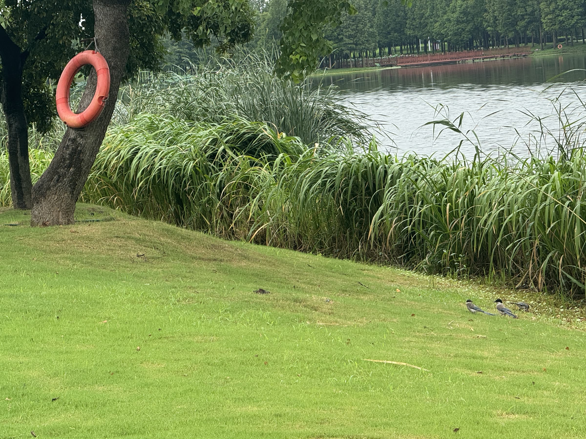
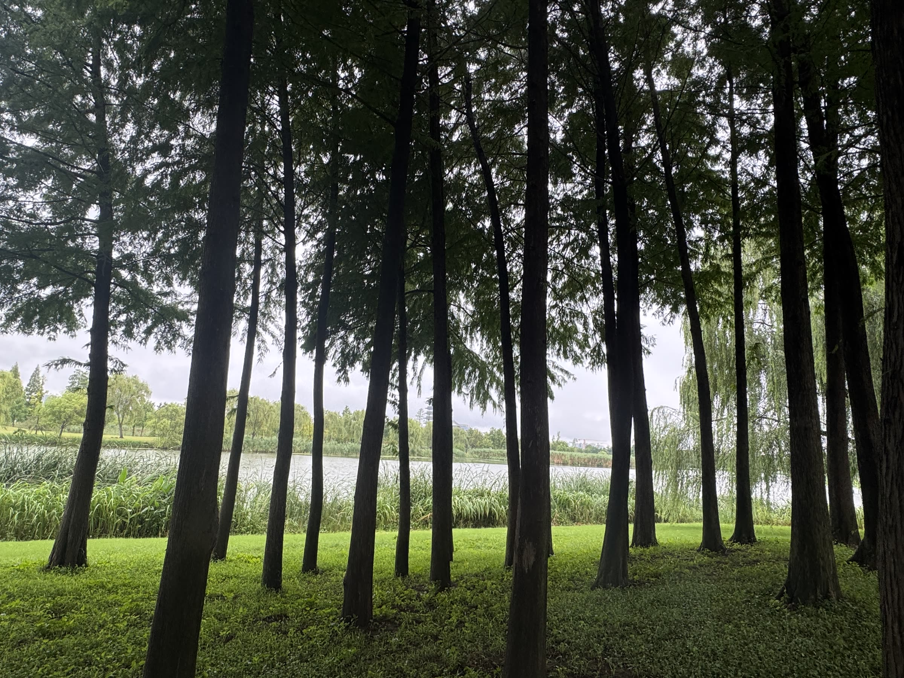
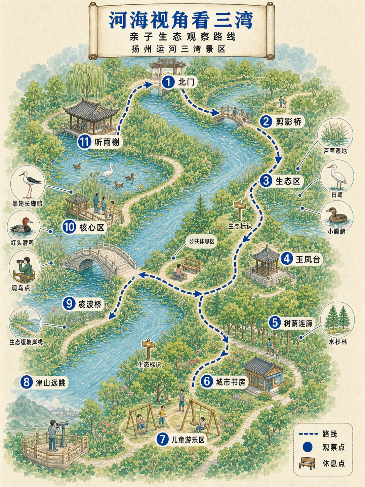
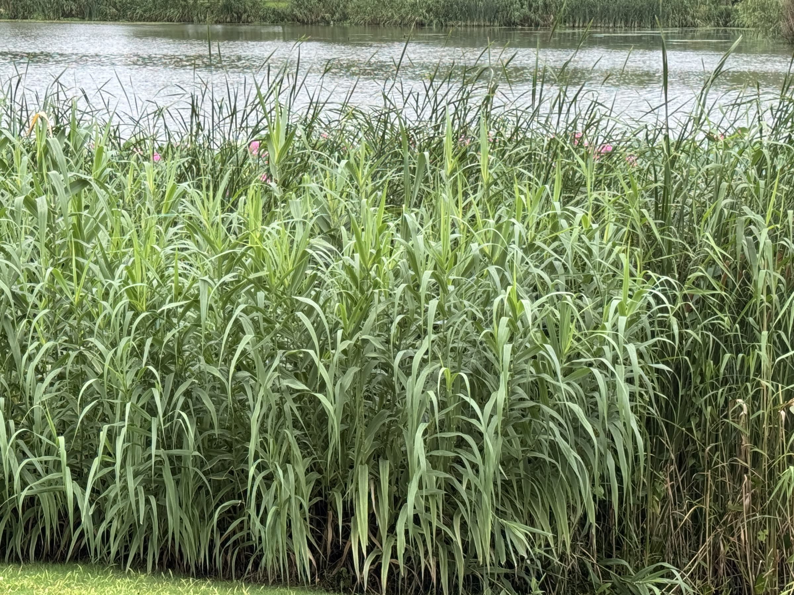
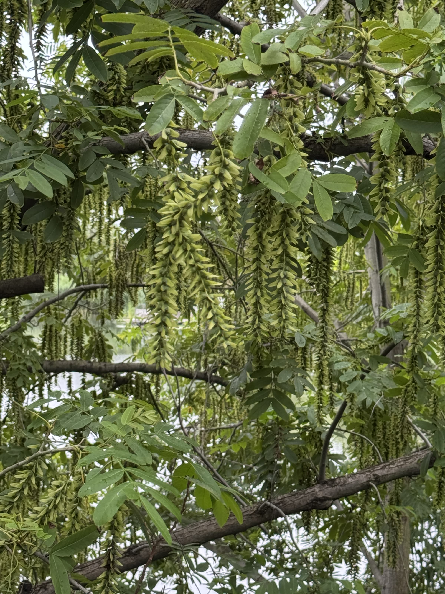
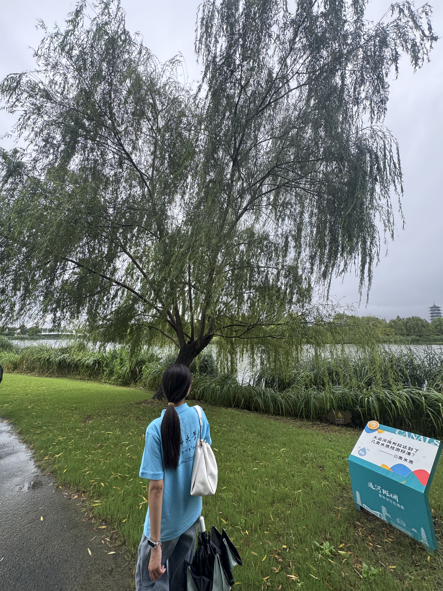

01
水岸生态
水岸植物与自然岸线共同形成生态缓冲空间，为鸟类和小型动物提供活动环境。
Sanwan Impression
三湾不是单一的观光景点，而是水岸生态、绿色空间与人文景观共同构成的城市生态文化场所。

水岸植物与自然岸线共同形成生态缓冲空间，为鸟类和小型动物提供活动环境。

林地、草坪与湿地空间相互连接，为城市居民提供亲近自然的公共空间。
桥梁、亭台和步道让生态保护成为公众可感知、可停留、可参与的城市生活场景。
Eco Guide
围绕实地照片与观察记录，平台设置三条主题路线，帮助游客从“看见风景”走向“读懂生态”。

入口 → 水岸柳林 → 荷塘区域 → 滨水植物带
沿水而行，观察植物、水体与岸线共同构成的生态空间。湿地水域 → 植物群落 → 鸟类观察点
从一片水面开始，认识湿地生态系统中的生命联系。桥梁 → 园林景观 → 公共活动空间
感受生态保护、城市更新与公共生活之间的融合。Eco Cards
每张卡片对应一个实地观察点，以团队采集照片为主体，结合可识别物种、湿地景观类型和绿色行动提示进行说明。
识别说明：照片识别以画面中可见形态为依据；无法精确到种的对象，采用“类群/景观类型”表述，后续可根据现场挂牌或专家确认继续修订。
水岸湿地
垂柳 Salix babylonica · 三湾湿地的绿色边界
画面中的柳树枝条柔软下垂，符合垂柳类水岸乔木的典型形态。柳树沿岸成片分布，构成公园水岸景观的柔性边界。
垂柳喜湿，常栽植于河湖岸边。其根系有助于固岸护坡，树冠和枝叶还能为鸟类、昆虫及游客提供遮蔽空间。
水岸湿地
荷花 Nelumbo nucifera · 水面之上的生态课堂
照片中可见粉色荷花与圆形荷叶，属于典型的荷塘景观。荷叶、花茎挺出水面，形成垂直层次明显的水生植物群落。
荷花是挺水植物，地下茎生于淤泥中，叶和花伸出水面。成片荷塘可美化水景，也为昆虫、鱼类和其他水生生物提供活动环境。

水岸湿地
芦苇/芦竹类挺水植物 · 水陆交汇处的生态屏障
照片中滨水高草具有禾本科挺水植物特征，画面形态接近芦苇或芦竹类植物。它们集中分布在水陆交界处，形成明显的湿地植物带。
挺水植物带能减缓岸边径流冲刷，拦截部分悬浮物，并为鸟类、小型动物、昆虫提供隐蔽、觅食和停歇空间。

水岸湿地
枫杨 Pterocarya stenoptera · 水岸固土型乔木
照片中可见羽状复叶和大量下垂果序，形态符合枫杨特征。枫杨常见于溪流、河滩和湿润岸边，是水岸绿化中辨识度很高的树种。
枫杨果实两侧具有翅状结构，便于随风传播；其根系发达、耐水湿，常用于水边固岸、涵养水源和保持水土。
林地生境
水杉/池杉/落羽杉类 · 城市中的绿色廊道
照片中乔木树干通直、成列分布，呈现湿生杉类林地景观。林下空间较开敞，适合形成连续的游憩和生态廊道。
水杉、池杉、落羽杉等树种常用于湿润地或水岸景观营造，可丰富垂直绿量、改善微气候，并为鸟类提供停歇与筑巢条件。
林地生境
灰喜鹊 Cyanopica cyanus · 公园常见林缘鸟类
照片中鸟类具黑色头罩、灰色身体和较长的蓝灰色尾羽，符合灰喜鹊的识别特征。它们常成小群在林缘、草地和公园道路附近活动。
灰喜鹊属于鸦科，适应城市公园环境，常在树冠和地面觅食昆虫、果实等。鸟类出现说明公园绿地提供了一定食物和隐蔽条件。
水岸湿地
沉水植物/水草群落 · 看不见的水体生境
照片中水面下可见片状绿色植物群落，属于沉水植物或水草形成的水下景观。它们与荷花、芦苇等岸边植物共同构成湿地植物层次。
水生植物可为鱼虾、昆虫等提供隐蔽空间，也能通过吸收水体营养盐、增加栖息结构来提升水域生态稳定性。
水岸湿地
草坪—灌草—挺水植物 · 岸线生态过渡带
照片呈现草坪、水岸高草和开阔水面相邻的空间结构，是典型的滨水缓冲带景观。不同高度的植物共同形成水陆过渡层次。
缓冲带可以削弱人类活动对水体的直接干扰，减少雨水径流把泥沙和污染物带入河湖，同时为动物提供迁移通道。
人文融合
河湖湿地景观 · 运河空间的生态更新
画面中开阔水面、滨水植物和桥梁共同构成三湾的标志性景观。桥梁强化游览体验，水岸植物则让硬质游线与自然空间衔接。
三湾的价值不只是“好看”，更在于通过水系疏浚、湿地修复和公共空间营造，把原有岸线转化为可游、可学、可感知的生态空间。
人文融合
亭台—乔木—草坪 · 在风景中读懂绿色发展
三湾将亭台、步道等人文景观与乔木、草坪、水岸等自然空间结合，既满足游览休憩，也强化了城市滨水空间的文化识别度。
绿色发展不仅是环境改善，也包括人与自然共享空间的建设。

人文融合
公共游线 · 从“路过”到“读懂”
照片中步道、柳树、水岸植物和科普牌共同出现，说明导览系统已经嵌入游览路线。游客在行走过程中可以接触生态信息。
科普标识是连接景观和公众认知的关键媒介。数字导览可以补充文字牌信息有限、互动不足的问题，让实地照片、物种说明和文明提示形成闭环。
Public Survey
结合问卷与访谈方向，平台预留调研结果展示区。后续可替换为真实数据图表。
公众普遍认可三湾生态环境改善，但对湿地生态功能的理解仍有提升空间。
多数游客愿意通过文明游览、科普学习、志愿活动等方式参与生态保护。
“看见风景”与“读懂生态”之间仍存在认知断点，数字化导览可以提供补充说明。
Practice Results
平台作为实践成果的数字化汇总入口，集中展示纪录片视频、宣传账号、新闻稿通讯稿和优化建议。
纪录片记录实践团队走进运河三湾，通过实地观察、影像采集和青年讲述，呈现三湾生态保护、 湿地景观营造和绿色发展实践成果。
当前网页接入压缩后的视频在线播放版本；如需更高清版本，建议接入 Bilibili、抖音或其他视频平台链接。
Social Media
扫码查看实践团队在不同平台发布的影像、图文和活动记录。
以纪录片和短视频形式记录实践过程，呈现团队观察路线、生态点位和公众参与场景。
整理实践过程、访谈片段、宣讲活动和团队观察记录，形成可发布的文字成果。
About Us
本平台由河海大学扬州市运河三湾绿色发展调研团制作，围绕“湾中见绿：走进运河三湾绿色发展实践”主题， 通过实地观察、公众调查、生态科普和成果反馈，引导公众从“看见风景”进一步转向“理解生态、参与保护”。